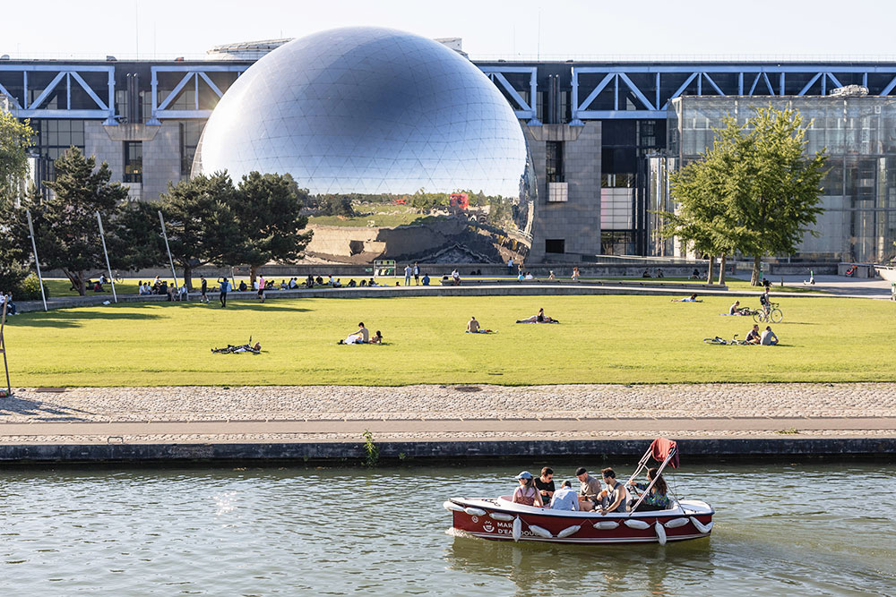
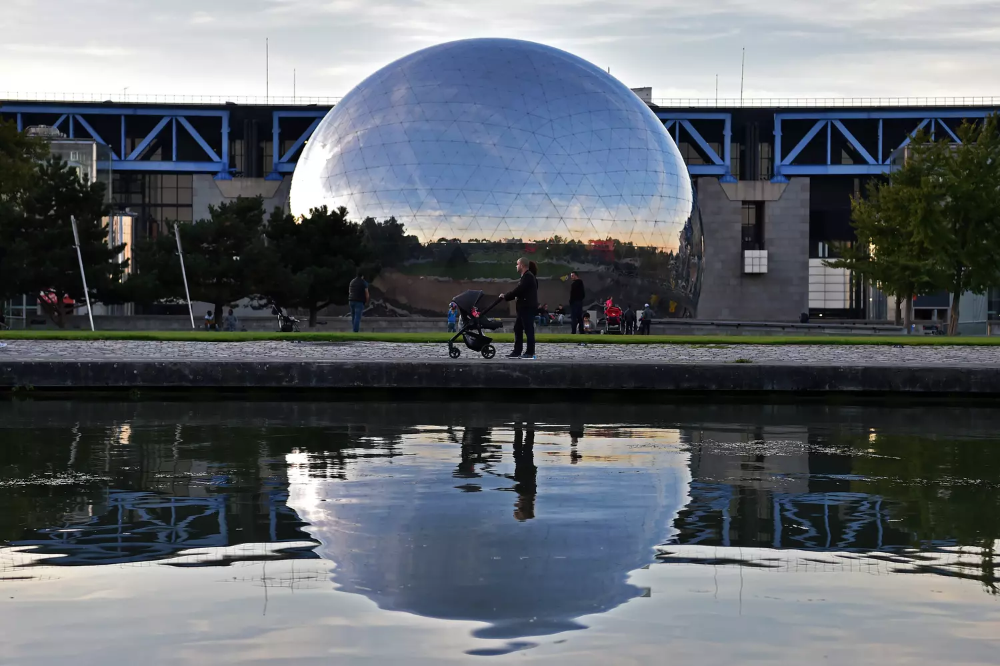

Anglais
AnglaisFOULES 2024
Découvrez le fascinant monde des foules à la Cité des Sciences.
En 2024, profitez de plusieurs nouveauté !

- 


- 

GALERIE
Découvrez le fascinant monde des foules à la Cité des Sciences.
En 2024, profitez de plusieurs nouveauté !
GALERIE
Normal : 11 € | Réduit : 9 € À partir de 10 ans Exposition en français, anglais et espagnol
Le 18 octobre 2024 De 10h à 18h D'autres dates à venir.
30 Avenue Corentin Cariou, 75019 Paris Métro : Ligne 7, Tramway : T3b